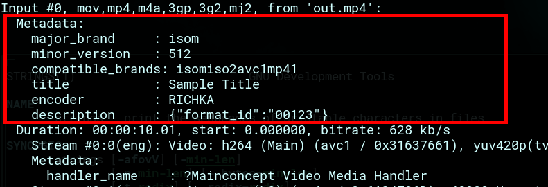

Integration Metadata into Video
Abstract
Almost of the video data consists of the binary data of video and audio streams, but the video format such as AVI(.avi), MPEG-4(.mp4) and QuickTime File Format(.mov) etc. support to embed key/value pairs of metadata into video binary because the formats have the dedicated area to embed.
The benefit to embed the metadata is to keep the application data in portable without having an external file. Even if we distribute the video file on the web, the metadata will not be lost and keep in stable. The metadata is officially standardized and general video player can understand them and no harm in the playback.
In RICHKA, we integrate some metadata into the generated videos to be available in our future applications. For examples, we integrate an id of video template used in the video generation to enable to locate even if the videos are distributed.
The keys supported by each container format are described below.
Based on the format, the keys are different, but we can easily integrate with ffmpeg.
https://wiki.multimedia.cx/index.php/FFmpeg_Metadata
[[]
Integrating metadata into Video
The sample below is to embed metadata with ffmpeg such as the name of the encoding tool,
the video title and the id of video format used.
We can suppress the needless transcode by simply copying video/audio streams with
the options -c:a copy -c:v copy.
$ ffmpeg -y -i test.mp4 \
-metadata encoding_tool='RICHKA' \
-metadata description='{"format_id":"00123"}' \
-metadata title="Sample Title" \
-c:a copy -c:v copy out.mp4
Retrieving metadata from video
There are some Linux commands to retrieve the metadata.
The 1st option is ffprobe which is automatically installed with ffmpeg.
In the output log, there is a section Metadada including the key/value pairs.
$ ffprobe out.mp4
...
Metadata:
major_brand : isom
minor_version : 512
compatible_brands: isomiso2avc1mp41
title : Sample Title
encoder : RICHKA
description : {"format_id":"00123"}
...
2nd option is to use AtomicParsley with a command option -t.
It simply show the raw data of the key/value pairs.
$ AtomicParsley out.mp4 -t
Atom "©nam" contains: Sample Title
Atom "©too" contains: RICHKA
Atom "desc" contains: {"format_id":"00123"}
This is not recommended to use in general,
but 3rd option is to use the powerful strings to print the sequences of printable characters in any files.
The metadata was integrated into the final area in the video binary.
$ cat strings out.mp4
...
data
Sample Title
data
RICHKA
-desc
%data
{"format_id":"00123"}
...